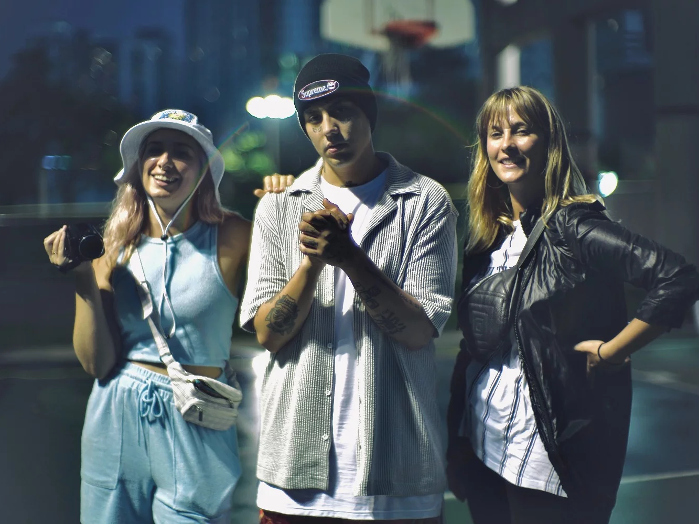

BEBAS en los Medios

"Melanie Anton, la directora de arte que cambió la imagen de la música urbana"
Tiempo Argentino - 9/06/2022

“Mano a mano con Melanie Anton, la directora de arte que eligen Tini Stoessel, Cazzu y Abel Pintos”
Big Bang News - 1/05/2022

“Algunos trabajos de la joven directora de arte que eligen las figuras argentinas de música urbana para sus videoclips”
La Capital MDP - 19/05/2022

“Quien es la jefa de arte sub 30 que eligen los artistas del momento para hacer sus videos”
Infobae - 24/04/2022